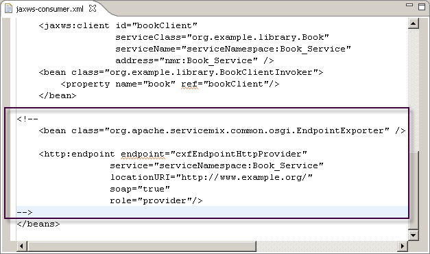

A WSDL based service consumer has a static endpoint if the Generate Static Endpoint check box is selected during consumer generation. This section explains how you change from a static endpoint to a dynamic endpoint.
To switch your service endpoint from static to dynamic:
- Click [Consumer] > META-INF > spring > jaws-consumer.xml.
- Comment the part of the XML file shown in the next figure:

Note: To switch to a static endpoint, remove the comment shown in the figure.